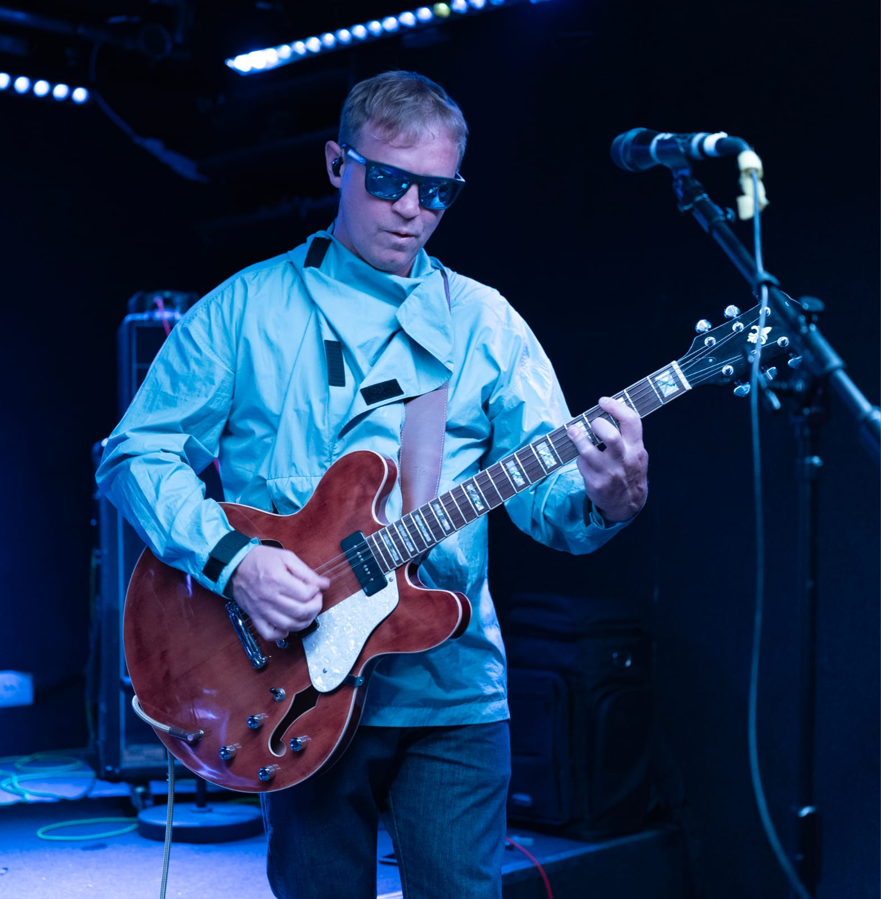
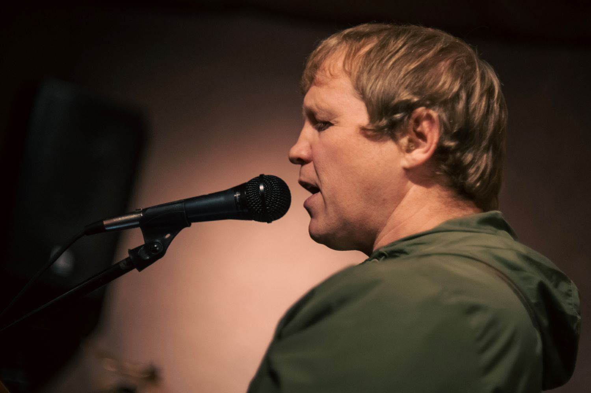
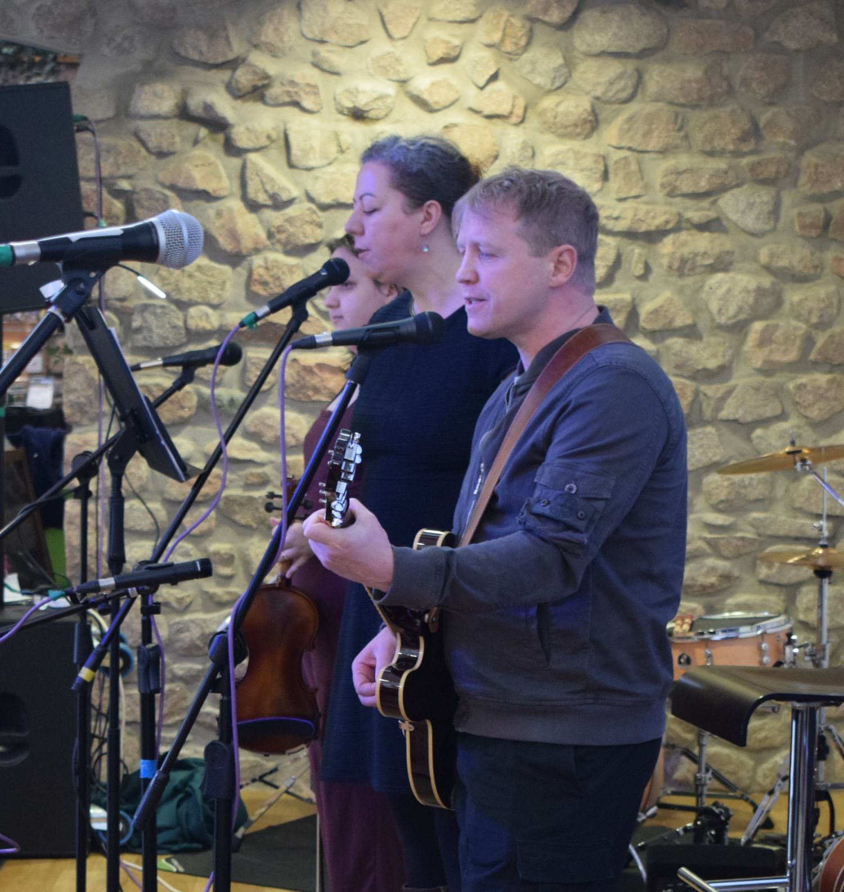
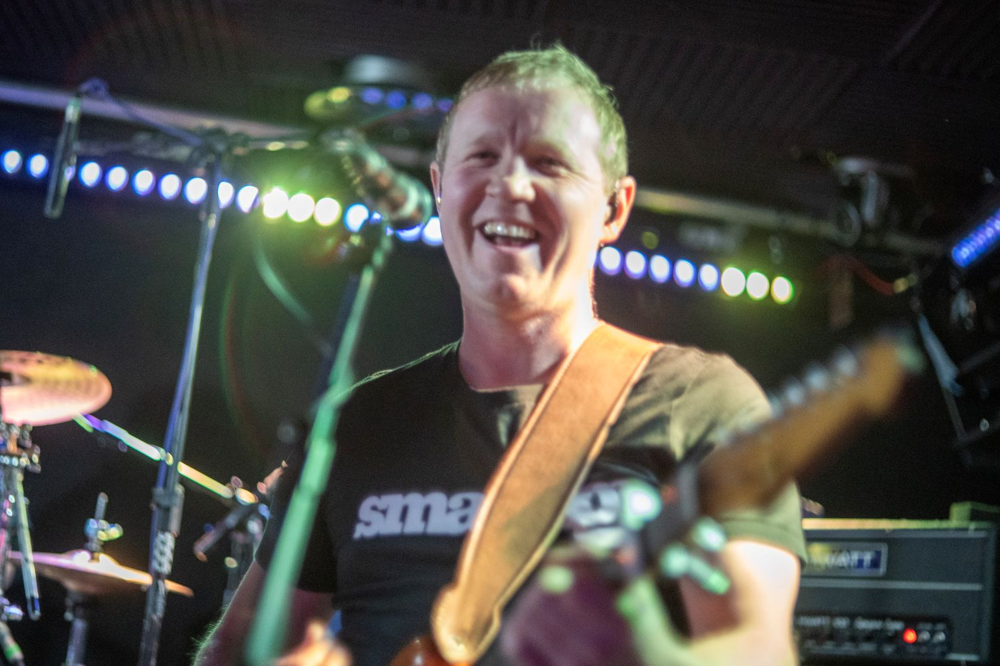
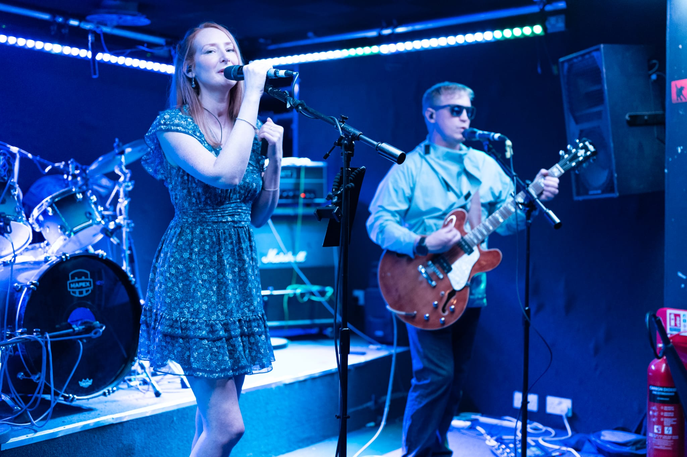
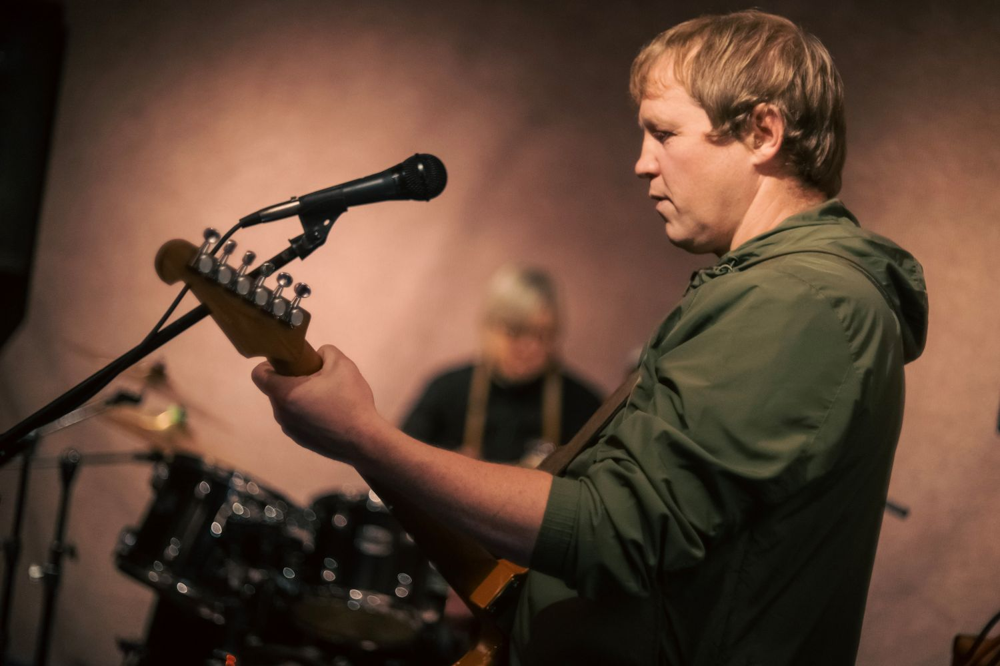
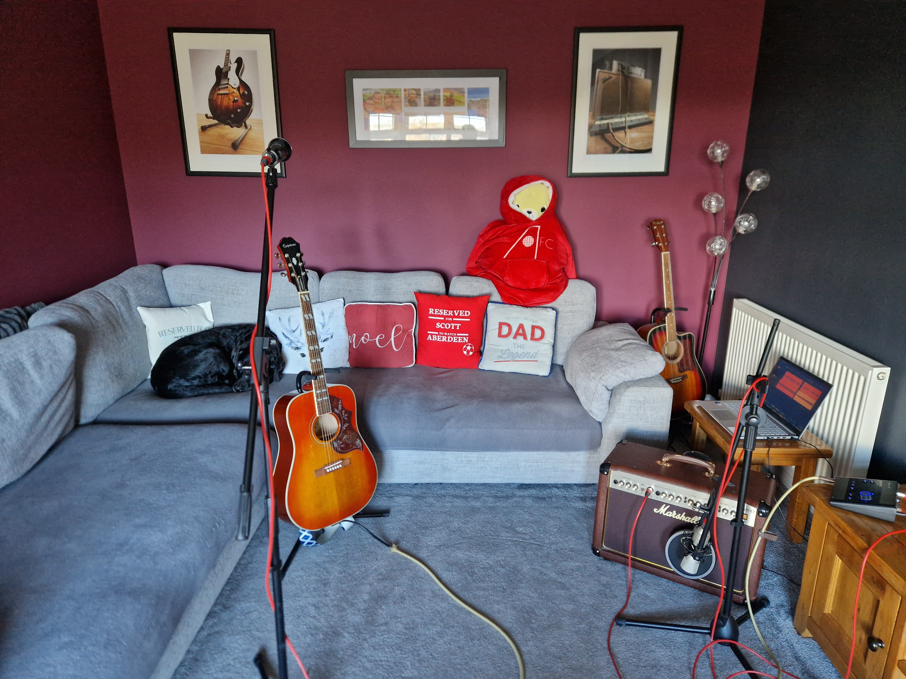

Composer, Performer, Producer
This portfolio has been created as part of the HNC Music graded unit and is designed to demonstrate my skills as a composer, performer and music producer. It presents a selection of original work supported by audio recordings, live performance footage, scoring, and production documentation.
The role of a composer involves creating and developing original musical ideas, applying knowledge of structure, harmony and arrangement, and using recording and production techniques to realise those ideas in a finished form. It also requires collaboration with other musicians and the ability to adapt work for both studio and live performance contexts.
Throughout this portfolio, I demonstrate these skills through the creation of original compositions, the use of music theory and notation, DAW-based recording and mixing, and participation in rehearsals and live performances. Supporting documentation is included to show my understanding of the wider professional context, including music business considerations and technical planning.

I have always been a huge fan of music and remain fascinated by its ability to move people and evoke a wide range of emotions. During the Covid years, I became immersed in music again, which led me to seek out other musicians to play with, improve my own skills and share that experience with others. This marked the beginning of a journey into songwriting, joining bands, composing, collaborating and, more recently, music production.
I have an eclectic taste in music, which has influenced my approach to songwriting and composition. I am always willing to experiment with different styles and learn new instruments where possible, as part of my ongoing musical development.
I am now focused on creating original music built around guitar-led songwriting and structured arrangement, developing ideas from initial concepts through to fully realised recordings.
Throughout this project, I have developed my skills in songwriting, recording and live performance, while also improving my understanding of music theory through chord construction, scoring and transposition. I have used Studio One as my primary DAW to record, arrange and produce my work.
I have also collaborated with other musicians in both rehearsal and live performance settings, which has helped shape my approach to arrangement and performance. This portfolio documents my creative process, technical development and practical experience as a composer and performer.



The following compositions form the core of this portfolio and provide evidence of my development as a composer and performer. Each piece demonstrates my ability to take an initial idea through the full creative process, including songwriting, arrangement, recording and live performance.
They also reflect my use of music theory, collaboration with other musicians, and application of production techniques within a DAW environment. Together, these works highlight both my technical skills and creative approach to composing and performing original music.
Here are some more videos from the "Sleeping Dog Sessions" I did at home, you might notice my lazy labrador, Odin, having a snooze behind me!
Some videos from a performance at Krakatoa, Aberdeen. It was from one of my previous bands - Cruise



This section demonstrates my application of music theory within the portfolio. The included scores show how chord progressions, structure and musical ideas were developed and communicated, supporting both composition and collaboration with other musicians.
Kick Myself Score Bless This Mess Score Chords and KeysThis section provides evidence of my understanding of technical setup for both recording and live performance. The included studio and stage plans demonstrate signal flow, equipment organisation and practical application of audio engineering knowledge.
Home Studio Plan Stage PlanThis section outlines the process used to mix and master my recordings. It demonstrates my ability to apply EQ, compression and effects to achieve a balanced and cohesive final sound, supporting the overall quality of my compositions.
Mix MethodThis section demonstrates my understanding of the professional and legal aspects of working in the music industry. It includes contracts, copyright considerations and a CV, showing awareness of ownership, permissions and professional practice.
Live Recording Contract Copyright and Royalties Study Musician CVThis blog documents the development of my graded unit project from initial ideas through to final performance and evaluation.
View Blog